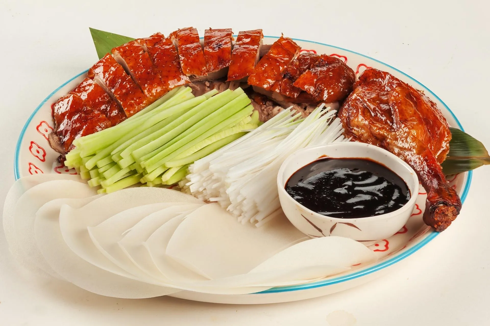
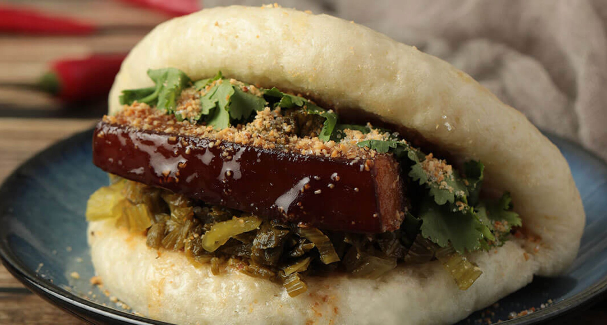

Gatronomia da China
 Culinária
CulináriaA caraterística mais marcante da culinária chinesa é o contraste das cores, aromas e sabores únicos dos pratos. Além dos pratos exóticos presentes em sua cultura, como carne de cachorro e escorpiões. A culinária presente na China é considerada uma das mais exóticas do mundo todo. Na maioria dos países do mundo podemos encontrar um restaurante chinês, mesmo que seja fast-food. O contraste das cores presentes nos pratos típicos são baseadas na teiria do yin yan: os polos contrários se completam. Por isso, é comum na China a presença de combinações de pratos doces e salgados, picantes e agridoces, quentes frios, etc. A culinária da parte norte da China (inclusive de Pequim) se caracteriza principalmente pela importância das massas e frituras: talharim, pastéis, bolinhos de carne, etc. Já os pratos da região do sul do país são bastante variados. Não é novidade a utilização de iguarias muito exóticas, como barbatanas de tubarão, carne de cachorro, cobras, escorpiões e gafanhotos. Tais hábitos, bastante exóticos para os padrões ocidentais, foram assimilados pelos chineses em virtude dos períodos de pobreza, guerra e carência alimentar por que passaram ao longo da história. Para comer, os chineses usam instrumentos parecidos com o hashi japonês, que segundo eles, tornam a comida mais saborosa. Geralmente, os mesmos não gostam de tomar bebidas junto com as refeições; dão preferência à sopa de soja.
Pratos típicos
Pato à PequimUm dos pratos mais tradicionais da China surgiu na dinastia Yuan e era muito servido nas cortes imperiais. A princípio o Pato à Pequim era preparado com temperos e molhos específicos e depois era levado ao forno com especiarias para ser assado. Em seguida, era cortado em fatias e acompanhado com crepes muitos finos, hoje em dia, é servido com molho hoisin, cebolas verdes e panquecas finas.

Porco agridoce
O Porco Agridoce é ícone da comida chinesa e é o tão famoso prato que surgiu na dinastia Han. O preparo do prato consiste na carne de porco temperada com vinagre e mel. Após a dinastia Tang o prato ganhou mais destaque e outros ingredientes foram acrescentados, são eles: abacaxi e pimentões. Atualmente, é muito servido com arroz, os mais tradicionais preferem apreciar somente a carne de porco e essa combinação do doce e azedo tem como princípio a medicina tradicional por causa do equilíbrio dos cinco sabores.
Tian Bu La
O Tian Bu la advém da dinastia Qing nesse momento os chefes chineses estavam empenhados na criação de pratos novos e principalmente brincar com os diferentes sabores. Esse prato é composto por um bolinho de peixe misturado com legumes frescos e temperos e o seu sabor é adocicado.
Frango do General Tso
Um dos pratos mais históricos da China, sua criação foi em homenagem ao líder militar Zuo Zongtang, criado pelo chef Peng Chang-kuei nos anos 50. De acordo com a história estava acontecendo um jantar para os líderes chineses e só tinha uma coxa de frango. O prato é feito de pedaços de frango fritos em tempura e com um molho agridoce. Uma curiosidade é que o general não provou e o seu nome foi homenageado no prato. Vale destacar que é muito conhecido no ocidente, principalmente nos EUA, mas teve algumas modificações para agradar o paladar americano.
Zong Zi
Um prato popularmente conhecido na China e afirmam que sua criação foi no Festival Duanwu que são corridas de barcos-dragão e para proteger o rio começaram a jogar pacotes de arroz na água. Durante o festival esse prato é bastante consumido para preservar a tradição e homenagear o poeta Qu Yuan. O Zong Zi é um arroz com textura pastosa temperado com óleo de pimenta, gengibre, molho de soja e óleo de amendoim, e é cozinhado em folhas de cana.
Mapo Tofu
Um prato clássico da culinária chinesa é o Mapo Tofu, que tem registros do século XIX que foi criado pelo Chen Mapo e é um prato tipo de Chengdu. Hoje em dia, esse prato foi muito reinventado, já que teve um grande alcance global e cada lugar o caracterizou de uma forma. No entanto, na receita original ele é feito com tofu picante com molho de óleo, pasta de amendoim fermentada com feijão preto, pimenta e carne moída (bovina ou suína).

Arroz frito
É inegável como o arroz faz parte da comida chinesa de diversas formas e receitas. O prato Arroz frito surgiu com a intenção de aproveitar as sobras do arroz na época da dinastia Yangshao. A preparação começa refogando o arroz cozido em uma frigideira ou nas panelas wok com vários ingredientes. Após fritar o arroz ele pode ser misturado com ovos, carnes ou frutos do mar. Ele pode ser consumido de várias formas, um dos motivos que o tornam tão famoso no país.
Bolinho de feijão
Diferentemente do Brasil que o feijão é usado como um prato salgado na China, ele é caracterizado de outra forma. Na dinastia Tang com as festividades do Ano Novo Lunar o bolinho de feijão, conhecido também como Tangyuan, era símbolo de plenitude familiar. O prato é feito com feijão vermelho e depois é passado em uma pasta feita de farinha e é cozinhado a vapor, após a receita evoluir foram incluídos outros ingredientes, como pasta de amendoim ou sementes de gergelim.
Gua-Bao
É um prato típico da província de Fujian, só que em Taiwan durante o século XX teve mais destaque. Começou a ser comercializado pelos vendedores ambulantes e ao decorrer do tempo ganhou espaço em restaurantes. O Gua-Bao é um pão macio que é recheado com carne de porco, amendoim, coentro e alguns condimentos e é muito conhecido e chamado de folhas de lótus.

Chow Mein
Mais um prato bastante tradicional da China e ganhou o coração da América do Norte. Ele se originou na dinastia Song e passou por muitas modificações ao longo dos anos. É um prato de massa frita e preparado na panela wok e o macarrão é misturado em diferentes molhos. No ocidente recebe legumes e carne, promovendo um prato com diferentes texturas e sabores. Como é um prato muito conhecido e tem a admiração dos chineses, ele está tanto em restaurantes como em barraquinhas.
Espetinho de insetos
Passear pelas ruas chinesas é se deparar com muitas barraquinhas de comidas e de espetinhos. Na pré-história era muito comum os caçadores se alimentarem de insetos, já que são ricos em proteína e gordura. Hoje em dia, uma das culturas que preservam esse costume é a chinesa. Dessa forma, são vários espetinhos de insetos, como: baratas; besouros; grilos; escorpiões, etc.